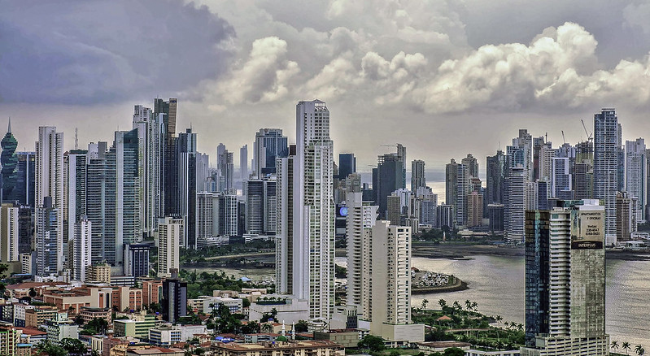

 Panama's landscape
Panama City is one of the most poblated cities in latin America, and
also, one that has seen the biggest development during the last 10 to 12 years.
Panama is a city full of activites and things to do. While it has grown a lot,
it has also kept lots of ancient monuments, places, and an incredible number
Panama, the country, not only the city, has even more things to offer to
potential tourists; here is a list of other cities and their main
Fell in love with Panama? here's more for you.
Panama City is one of the most poblated cities in latin America, and
also, one that has seen the biggest development during the last 10 to 12 years.
The city has one of the most beautiful landscapes of the region, but also has
full areas of vegetations, wild lifes and natural reserves.
The city has the particularity to be the only city in the world where you can
see both Atlantic and Pacific oceans; Thanks to this, you can visit the
Panama
Canal, which is the most famous canal in the world.
If you want to take a deeper view of the city and it's different areas and diversity, click here!
Panama is a city full of activites and things to do. While it has grown a lot,
it has also kept lots of ancient monuments, places, and an incredible number
of things to do, one crazier and more insteresting than the other, so, do not be
afraid to give each a try!
Here are some suggestions of activites one can do in the city:
- Key places to visit in the city
- Outdoor activities
- Shopping
- Night life